Vergesst alles, was ihr über Großstädte zu wissen glaubt. Tokio ist keine Stadt. Tokio ist ein kollektives Versprechen, dass Chaos und Ordnung eine leidenschaftliche Affäre haben können. Die Zukunft fand hier gestern schon statt, während das Gestern nebenan noch ehrfürchtig im Tempelgarten geharkt wird. Beides gleichzeitig. Niemand findet das komisch. Außer mir, am ersten Tag.
Wer zum ersten Mal aus der Shinjuku Station tritt, dem geschäftigsten Bahnhof der Welt, der sich anfühlt wie der Vorhof zu einer anderen Galaxie, wird von einer Welle aus Neonlicht, aus J-Pop, aus schierer Menschenmasse erfasst. Und jetzt das Geheimnis: Niemand rempelt dich an. 14 Millionen Menschen, eine Choreografie, alle kennen die Schritte. Ich stand da mit meinem Koffer wie jemand, der zur Generalprobe des falschen Balletts erschienen ist.
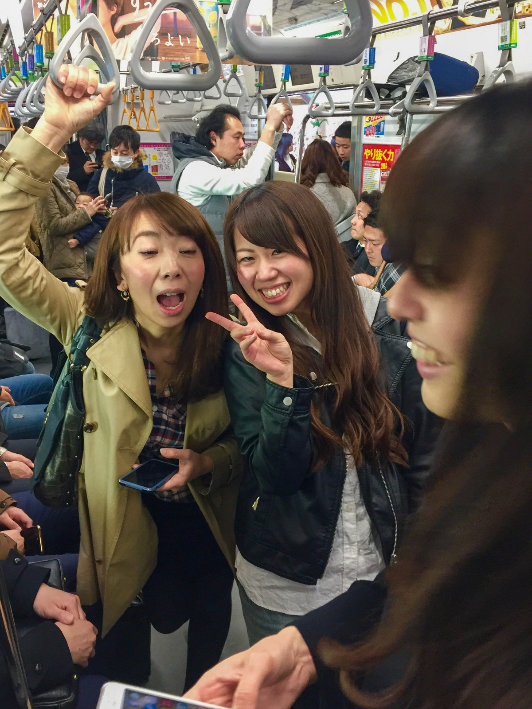
Die Ästhetik des Widerspruchs
Das Herz dieser Stadt schlägt in den Zwischenräumen. Es ist diese absurde, wunderbare Spannung zwischen:
- Akihabara: Roboter-Cafés und glitzernde Anime-Türme, die deine Netzhaut zum Extremsport anmelden.
- Meiji-jingū: Drei U-Bahn-Stationen weiter verschluckt ein Shintō-Schrein den Lärm der Welt einfach so. Zypressenduft statt J-Pop. Als hätte jemand den Stecker gezogen. Im besten Sinne.
- Asakusa: Am Sensō-ji hängt eine Papierlaterne, drei Meter hoch, rot wie ein Stoppschild. Jeder muss drunter durch, ob er will oder nicht. Tokios ältester Tempel, mitten im Touristenstrom, und trotzdem kein bisschen Kulisse.
- Kōkyo Gaien: Ein paar hundert Meter freie Kiesfläche vor dem Kaiserpalast, gesäumt von Schwarzkiefern. Direkt dahinter die Glastürme von Marunouchi, als hätte sich das Finanzviertel nur aus Höflichkeit ein paar Schritte zurückgehalten.
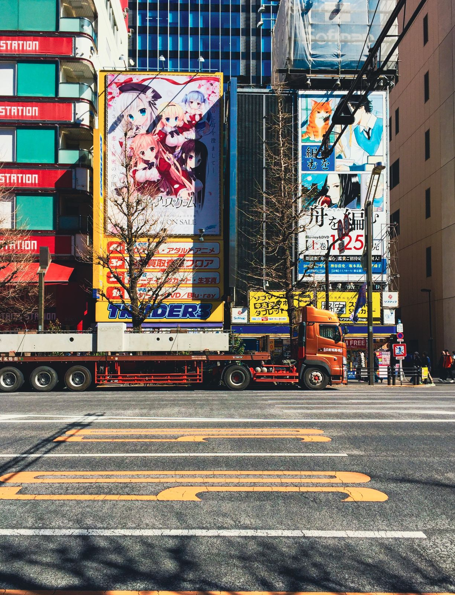
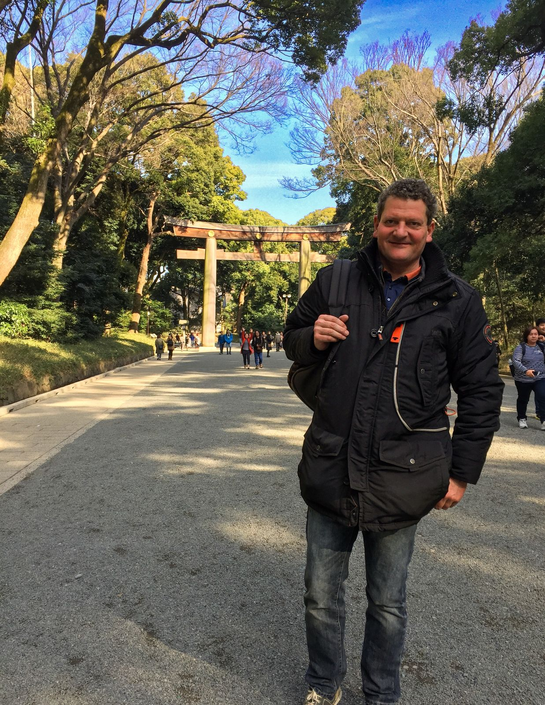

Und manchmal schenkt dir Tokio einen Moment, den kein Reiseführer verspricht: Am Meiji-jingū kam uns ein Hochzeitspaar entgegen: sie in weißer Seide mit Wataboshi-Haube, er im schwarzen Montsuki. Hundert Touristen, hundert Handys. Trotzdem absolute Stille. Ich habe genau ein Foto gemacht und dann einfach nur geschaut.
Direkt neben dem Schrein liegt der Yoyogi-Park, und in den bin ich vernarrt. Vor 1945 war das Gelände Exerzierplatz der kaiserlichen Armee, davor, 1910, Schauplatz von Japans allererstem Motorflug. Nach dem Krieg übernahmen amerikanische Besatzungstruppen das Areal und bauten die Wohnsiedlung Washington Heights. Erst 1964, für die Olympischen Sommerspiele, wurde daraus das Olympische Dorf, direkt neben der ikonischen Yoyogi-Sporthalle von Kenzo Tange mit ihrem schwebenden Hängedach. Seit 1967 ist es einfach Park, 54 Hektar groß, über 600 Kirschbäume, und sonntags Treffpunkt für so ziemlich jede Subkultur der Stadt: Rockmusiker, Cosplayer, Kampfsportgruppen, alle nebeneinander auf derselben Wiese. Ich könnte da Stunden sitzen. Hab ich auch, mehr als einmal.
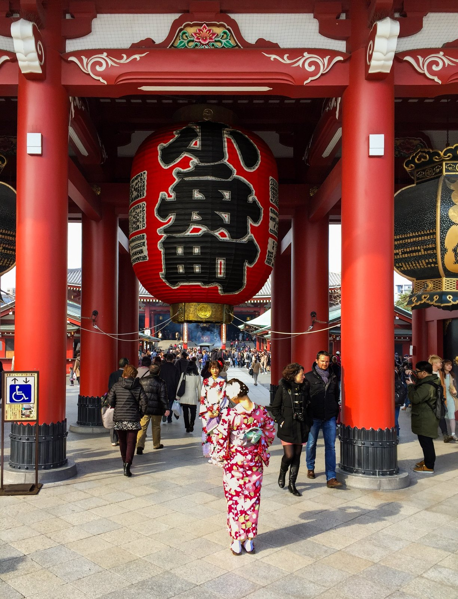
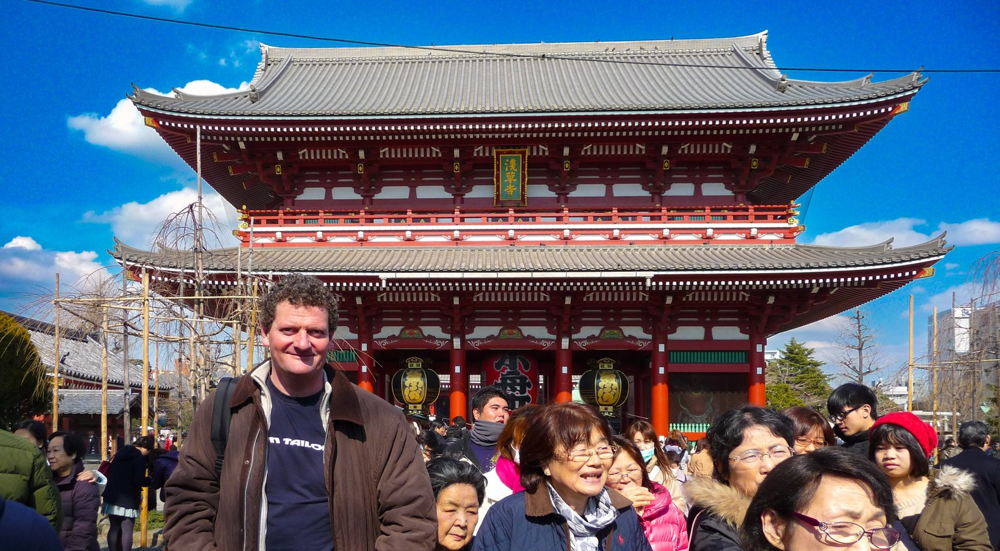
Ein paar Kilometer weiter, in Asakusa, wiederholt sich das Old-Tokyo-Gefühl unter einer noch größeren Laterne: das Kaminarimon-Tor des Sensō-ji, Tokios ältester buddhistischer Tempel, gegründet im Jahr 645. Frauen im Kimono laufen zwischen Selfie-Stöcken hindurch, als wäre das schon immer so gewesen, was, ehrlich gesagt, auch stimmt. Nur die Handys sind neu.
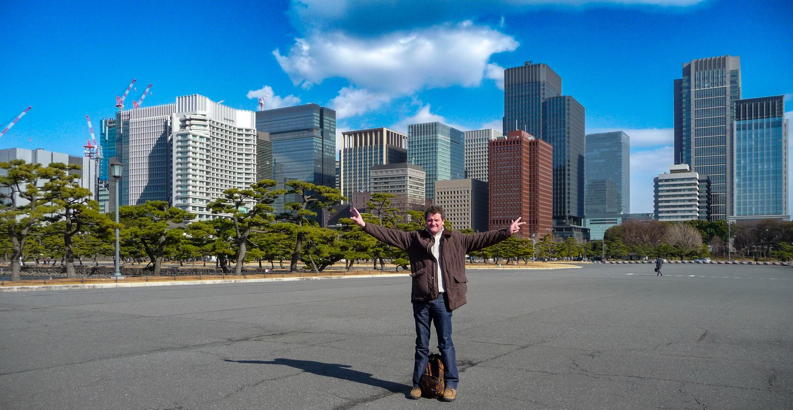
Der vierte Widerspruch braucht keinen Tempel und keine Anime-Werbetafel, nur eine leere Kiesfläche vor dem Kaiserpalast: Kōkyo Gaien, wo gestutzte Schwarzkiefern den Blick freigeben auf exakt die Glastürme, die anderswo in der Stadt so laut sind. Hier stehen sie nur da, wie eine Kulisse, die sich benimmt.
Für den eigentlichen Kaiserpalast dahinter brauchte ich vorher eine Besuchserlaubnis, beantragt von Deutschland aus bei der Kaiserlichen Haushaltsbehörde, mit fester Vorabreservierung. Kaiser war damals noch Akihito, mein erster Japan-Besuch überhaupt. Heute geht die Anmeldung online in wenigen Minuten. Damals war es Papierkram und Warten auf Post aus Tokio. Ich stand danach ziemlich allein auf dem Platz, Station Nijūbashimae, hinter mir nichts als die Skyline.
Es ist eine Stadt, in der man in einem futuristischen Wolkenkratzer in Roppongi einen Whisky trinkt, nur um eine Stunde später in der Golden Gai in einer verrauchten Bar zu landen, die kaum größer ist als ein begehbarer Kleiderschrank. Sechs Hocker, ein Wirt, null Quadratmeter Privatsphäre. Beste Abende meines Lebens.
Tokyo Tower: Alt-Japan im Schatten von Stahl
Der vielleicht schönste Widerspruch der ganzen Stadt liegt zu Füßen des Tokyo Tower, nicht in Akihabara: vor dem Tokyo Shiba Tofuya Ukai (東京 芝 とうふ屋うかい), einem der renommiertesten Tofu-Restaurants der Stadt. Am Eingang verbeugt sich ein Herr mit Hut, tief und lange: Ojigi in seiner höchsten Form, Omotenashi, japanische Gastfreundschaft, die ganz ohne ein Wort auskommt und trotzdem alles sagt. Direkt daneben ein Kiefernbaum, von Dutzenden Seilen kegelförmig nach oben gebunden: Yukizuri, eine jahrhundertealte Technik, die im Winter die Äste vor der Schneelast schützt und hier, mitten im Frühling, einfach stehen bleibt wie ein Bühnenbild, das keiner abgebaut hat. Und darüber, orange-weiß gegen den Himmel, ragen die 333 Meter Stahl auf, die seit 1958 Tokios eigenwillige Antwort auf den Eiffelturm sind. Ich habe beides fotografiert, die Verbeugung und den Turm, mit derselben stillen Begeisterung. Und mich gefragt, wer von beiden hier eigentlich wen in den Schatten stellt.
Im Hintergrund, kaum zu sehen: das Azabu East, mein allererstes Hotel in Tokio, bei meinem ersten Besuch hier. Die Stadt hat sich seitdem verändert. Der Blick von genau dieser Ecke offenbar nicht.
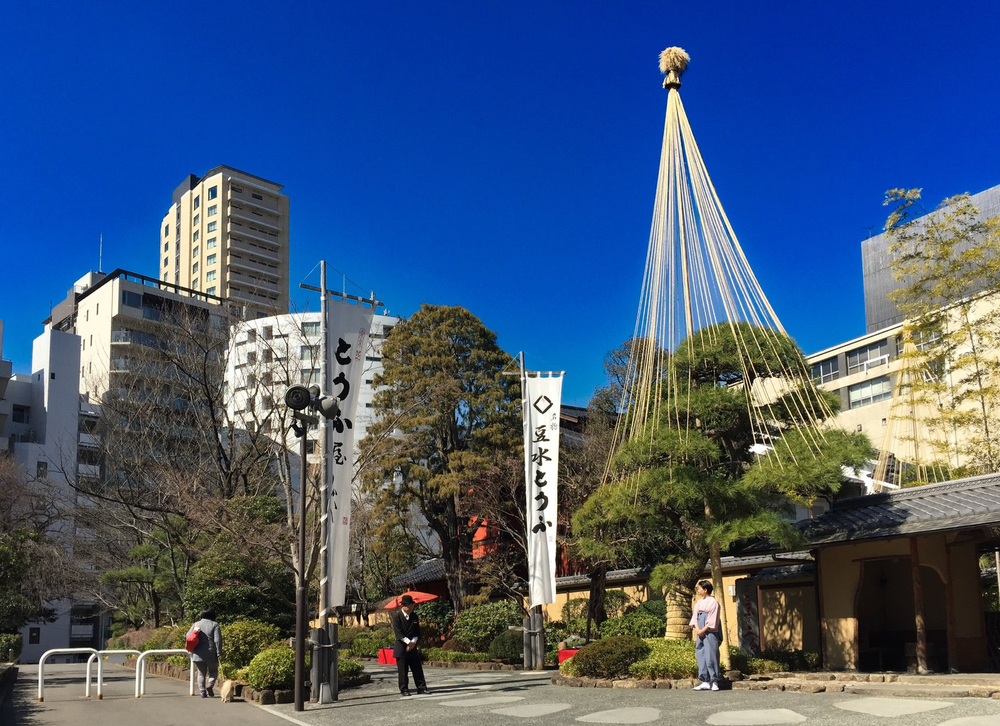
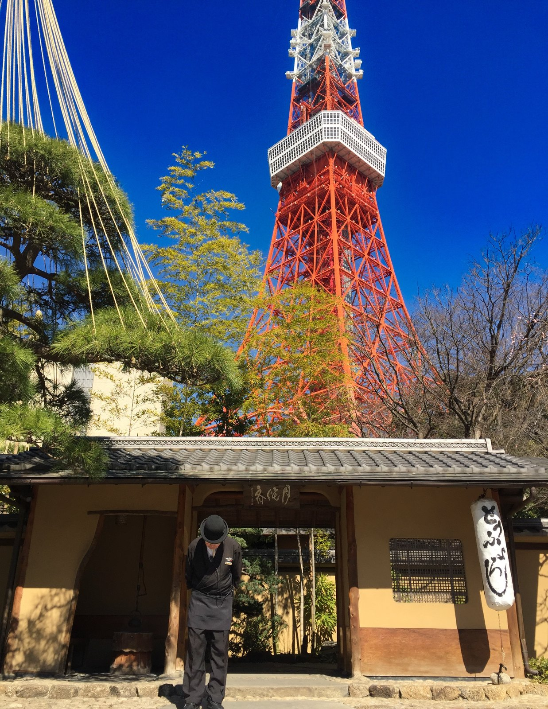
Und weil Tokio keinen Widerspruch auslässt, hat die Stadt sich 2012 gleich einen zweiten, größeren Turm gebaut: den Tokyo Skytree, 634 Meter hoch, fast doppelt so hoch wie sein orangeroter Vorgänger. Der Grund war banal und sehr Tokio zugleich: die Wolkenkratzer rund um den alten Tokyo Tower waren irgendwann so hoch gewachsen, dass sie das Fernsehsignal blockierten. Also baute man einfach höher, statt die Häuser kürzer zu machen. Unten im Sockel: das Einkaufszentrum Solamachi, oben: der zweithöchste Turm der Welt nach dem Burj Khalifa. Zwei Türme, ein Fluss dazwischen, 54 Jahre Unterschied. Und beide behaupten bis heute, DAS Wahrzeichen der Stadt zu sein.
Ich war kurz nach der Eröffnung oben, eines der absoluten Highlights der ganzen Reise. Seitdem bin ich mindestens zweimal zurückgekehrt. Manche Türme besucht man einmal und hakt sie ab. Diesen offenbar nicht.
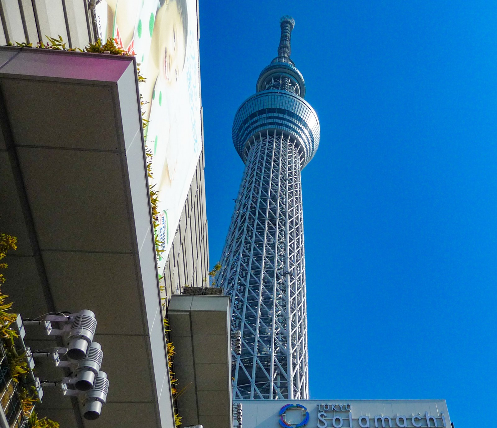
Eine Liebeserklärung an den Gaumen
In Tokio zu essen ist keine Nahrungsaufnahme. Es ist eine religiöse Erfahrung mit Stäbchen. Die Detailverliebtheit hier tut fast weh. Handgeknetete Soba-Nudeln in einer versteckten Gasse in Yanaka, High-End-Sushi in Ginza, bei dem jeder Schnitt des Meisters eine jahrzehntelange Ausbildung verrät. Qualität ist hier der Standard, nicht die Ausnahme.
„Tokio ist die einzige Stadt der Welt, in der man an einem Plastikautomaten für 500 Yen ein Ramen-Ticket kauft und eine Mahlzeit erhält, die in jeder anderen Hauptstadt der Welt als Sterne-Küche gefeiert würde."
Genauso zu Tokio gehören die Getränkeautomaten an jeder Ecke. Mehrere Millionen stehen im ganzen Land, die höchste Dichte pro Kopf weltweit. Nachts leuchten sie wie kleine Leuchtreklamen, auch in der schmalsten Gasse, in der sonst nichts geöffnet hat. Ein Getränkeautomat gehört zu Tokio wie der weiß-blaue Himmel zu Bayern. Man merkt ihn erst richtig, wenn er mal fehlt.
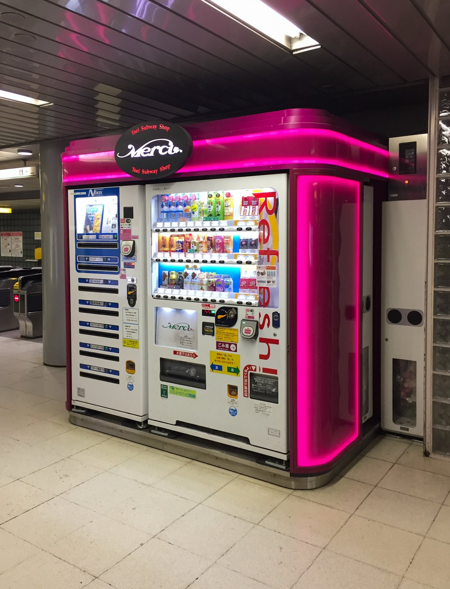
Warum Tokio süchtig macht
Man kommt wegen der Lichter, aber man bleibt wegen der Höflichkeit. Man kommt wegen der Technik, aber man verliebt sich in die kleinen Rituale: das Verbeugen des Schaffners. Die perfekt ausgerichteten Taxis mit weißen Spitzendeckchen auf den Sitzen. Die Tatsache, dass man nachts um drei völlig sicher durch jede Gasse spazieren kann. Ich habe das getestet. Mehrfach.
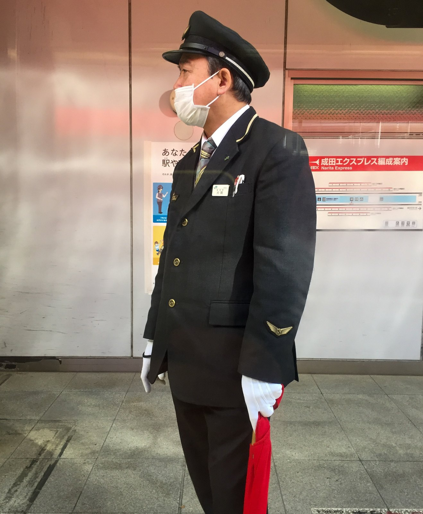


Vor dem einen Werbebanner in Akihabara stand ein Japaner, komplett versunken in das Bild, als würde der Rest der Kreuzung um ihn herum einfach aufhören zu existieren. Ich glaube, er hat mich gar nicht bemerkt, obwohl ich direkt neben ihm fotografiert habe.
„No Music No Life" ist eines meiner eigenen Lebensmottos, lange bevor ich wusste, dass es auch der Slogan von Tower Records ist. Ich war im Laden essen, im Tower Records Cafe, das es dort tatsächlich gibt, und die Atmosphäre war grandios, lauter Typen, die aussahen, als würden sie hier wohnen. Das ist schon eine Weile her. Ob es den Laden heute noch gibt? Ja, und wie: Die Filiale in Shibuya ist eine der letzten großen Tower-Records-Filialen der Welt (die Kette überlebt fast nur noch in Japan), gerade mitten in einer großen Renovierung, Wiedereröffnung Ende Februar 2026. Fast 30 Jahre am selben Fleck, seit 1995.
Tokio fordert deine Sinne und respektiert deinen Raum. Es ist laut, es ist leise, es ist schrill und es ist zutiefst andächtig. Manchmal alles im selben Häuserblock.
Bequeme Schuhe, den Reiseführer in die Tasche, und an einer Station aussteigen, deren Namen man nicht aussprechen kann. Die Stadt erledigt den Rest. Wer einmal den Rhythmus von Tokio im Blut hat, findet danach jede andere Stadt ein bisschen … langsam. Viel Spaß beim Verlieben.